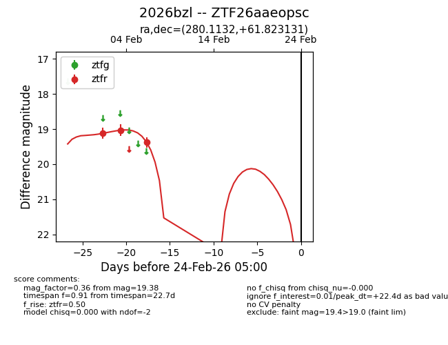
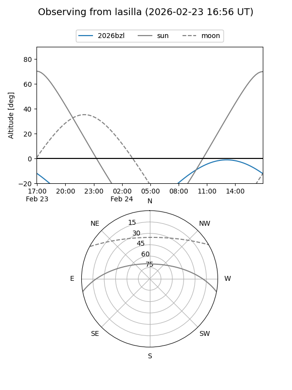
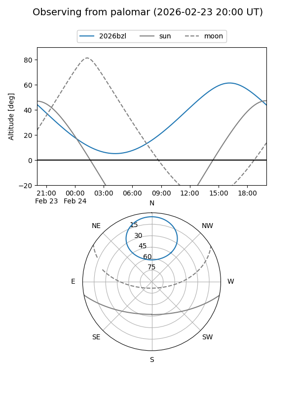

2026bzl
Target 2026bzl at 2026-02-24 09:08
Aliases and brokers:
FINK: link
Lasair: link
ALeRCE: link
TNS: link
YSE: link
alt names
ZTF26aaeopsc (ztf,fink_ztf)
2026bzl (tns,yse)
Coordinates:
equatorial (ra, dec) = 280.1132,+61.82313
equatorial (HMS+DMS) = 18:40:27.17,+61:49:23.27
galactic (l, b) = (91.5817,+24.96613)
Flags:
Photometry:
last ztfr=19.38
3 ztfr detections
Lightcurve

Visibility


Additional plots